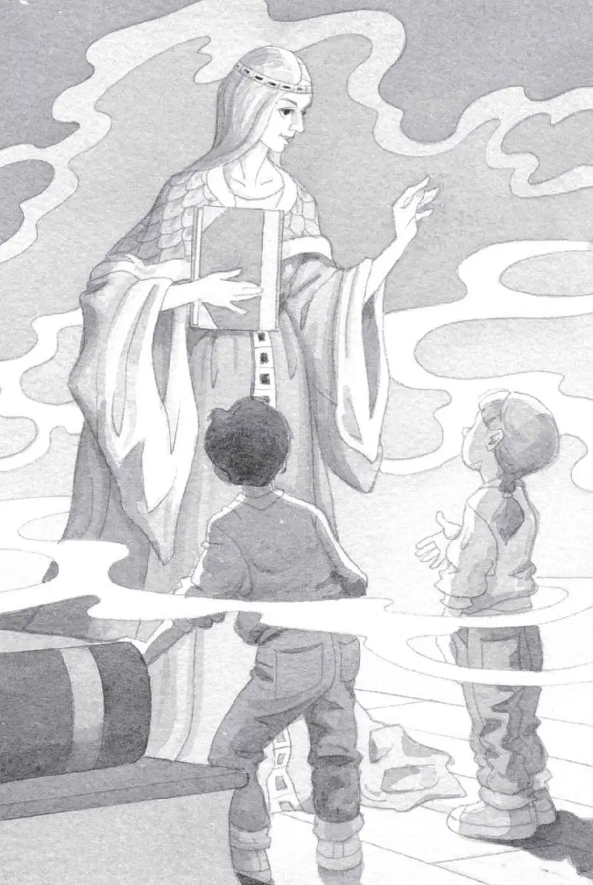

“Thank you,” Morgan said softly. “You have freed me from the magician’s spell.”
Jack just stared at her.
“You were Peanut?” Annie said.
Morgan nodded and smiled.
“Really? You were with us all the time?” said Jack. “On all our missions?”
Morgan nodded again.
“Why did we have to go on this mission to find a mouse?” said Jack. “If you were always with us?”
“To break the spell, we had to be on the moon,” said Morgan. “You could have broken it the minute we arrived.”
“Oh, that’s what Peanut—I mean you were trying to say!” said Annie. “We didn’t have to leave the moon base at all.”
Morgan nodded, smiling.
“But the moon man came along to help us,” said Annie. “He drew a constellation of a mouse! Is he a friend of yours?”
Morgan shrugged. “Let’s just say we had a little talk. He stopped by the moon base while you were out.”
“The same way you had a talk with the ninja master, right?” said Jack. “And the monkey and the sorcerer?”
Morgan nodded. “I always squeaked to the ones who helped you.”

“But how did they understand you—a mouse?” said Jack.
Morgan smiled again. “Certain wise ones understand the language of little creatures,” she said.
“I bet it was you who turned the pages of the books!” said Annie. “To show us where to go next!”
Morgan nodded.
“But who turned you into a mouse?” said Annie.
Morgan frowned. “A certain person who likes to play tricks on me,” she said. “His name is Merlin.”
“Merlin!” said Jack. “The greatest magician who ever lived.”
Morgan sniffed. “He’s not that great,” she said. “He doesn’t even know I have two brave friends who help me.”
“Us?” said Annie shyly.
Morgan nodded. “And I thank you both with all my heart.”
“You’re welcome,” said Jack and Annie.
Morgan handed Annie the Pennsylvania book. “Are you ready to go home now?” she asked.
“Yes!” said Jack and Annie.
Annie pointed to a picture of the Frog Creek woods. “I wish we could go there,” she said.
The tree house started to spin.
It spun faster and faster and faster.
Then everything was still.
Absolutely still.
But only for a moment.